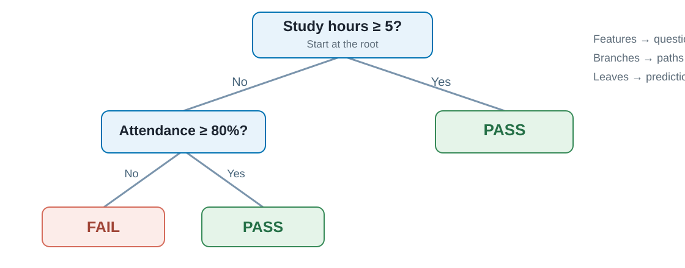
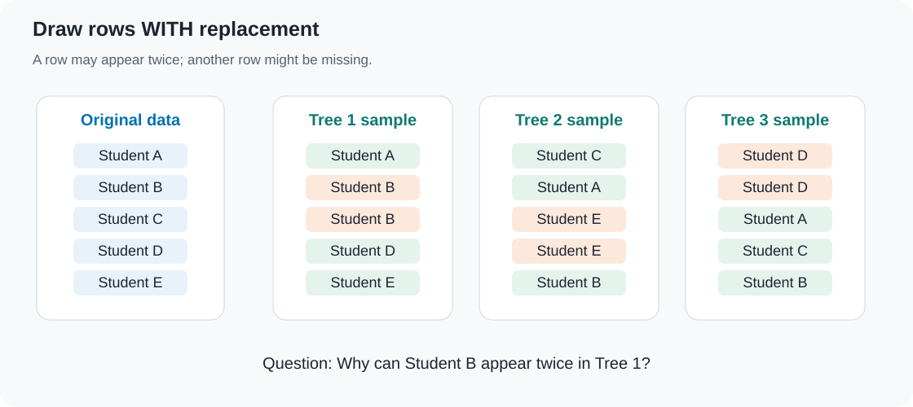
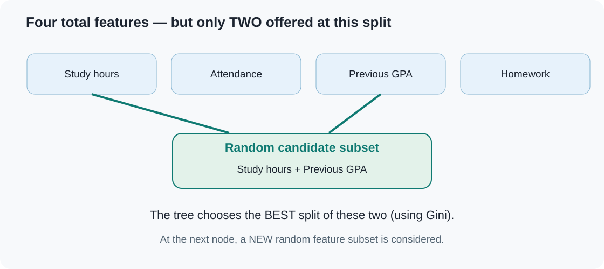
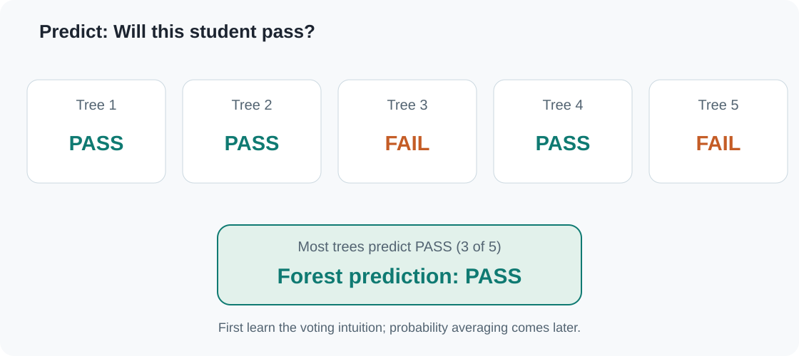
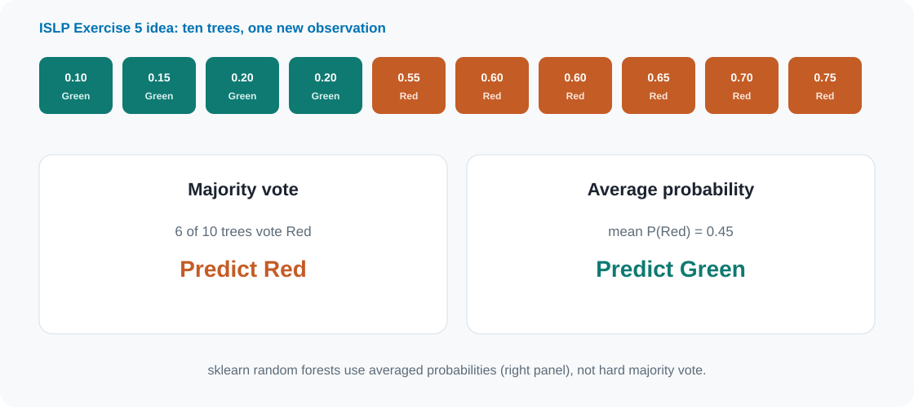
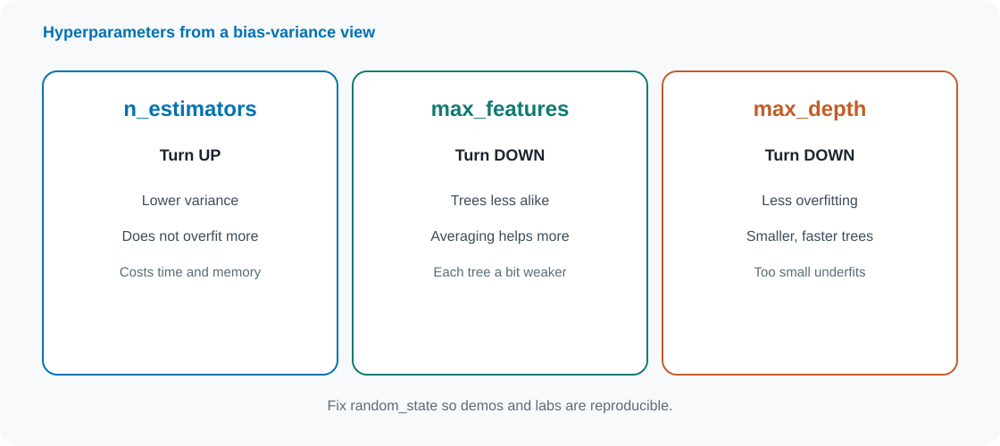
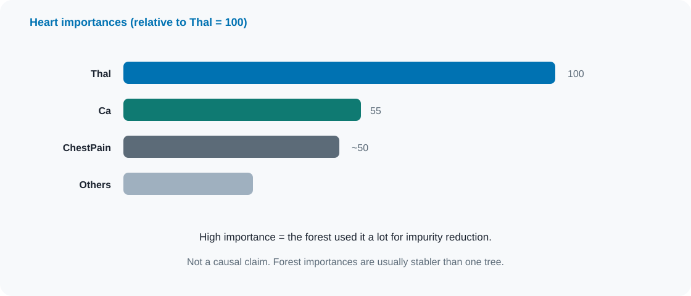
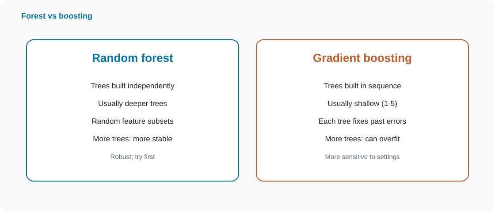

Data 201 · Week 11
Random forests
From one tree to a forest: building, tuning, and interpreting
Rebin Muhammad
Montgomery College
Today
Today: from trees to forests
01
Why forests
One tree overfits; averaging reduces variance.
02
How they build
Bootstrap rows + random features.
03
Tuning
n_estimators, max_features, max_depth.
04
Examples
Cancer, moons, Heart; importances.
05
Boosting + lab
Short contrast, then digits lab.
Review · Last week
How does a decision tree make a prediction?

Each split asks a question. Gini or entropy helps choose a good split. A leaf makes a prediction.
Ask: What are we trying to minimize when we use Gini impurity?
Review · Last week
Can a decision tree learn too much?
Suppose a deep tree gets:
Training accuracy: 100%
Test accuracy: 72%
Illustrative numbers, not experiment results.
Why the gap?
The tree may learn details and noise from the training set that do not generalize to new students.
Class question: Is 100% training accuracy always good?
Next: Could combining predictions from many different trees help?
The problem
A perfect training score can be a warning

The big idea
Many different trees make one prediction

Step 1 · bootstrap
Each tree trains on a slightly different sample

Step 2 · feature sampling
Randomly choose candidates; still pick the best split

Why diversity matters
If every tree thinks alike, little is gained

Putting it together
Two kinds of randomness, then combine

Step 3 · prediction
Five trees make one classroom prediction

Optional · deeper look
Vote vs. average probability: a subtle difference

Model controls
Three settings worth knowing

In code
Split, fit, score
from sklearn.ensemble import RandomForestClassifier
X_train, X_test, y_train, y_test = train_test_split(
X, y, random_state=0)
forest = RandomForestClassifier(n_estimators=100, random_state=0)
forest.fit(X_train, y_train)
forest.score(X_train, y_train)
forest.score(X_test, y_test)Split first. Fit on training only. No scaling needed for trees.
Example · breast cancer
Compare models on unseen test data

Example · two moons
Different boundaries, smoother overall prediction
Optional · bagging
What if each split could use all features?

Interpretation
Feature importance is not cause and effect

Importances
Single tree vs forest
Single tree
Often a few features dominate
Many zeros if never chosen
Unstable across samples
Random forest
Importance averaged over many trees
More features get nonzero scores
Broader picture of the data
Tradeoffs
Strengths and limits
Strengths
Often strong with little tuning
No feature scaling
Mixed feature types OK
Easy to parallelize (n_jobs)
Limits
Hard to read hundreds of trees
Heavier than linear models
Weak on huge sparse text
Need random_state for demos
Optional · looking ahead
Boosting: build trees one after another

Keep these
Five takeaways
Lab
Digits lab in Google Colab
Baseline tree → random forest → tune → importances → peek at boosting.